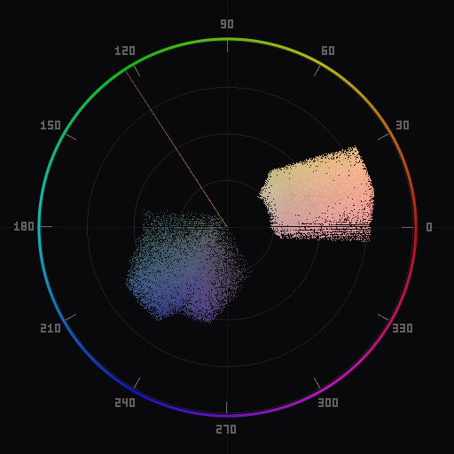

Color Grading Portraits with a Vectorscope
A step-by-step vectorscope workflow that takes a portrait from raw capture to finished grade while protecting skin tones throughout.

The starting point: an ungraded portrait with its vectorscope showing the raw chrominance distribution.
Color grading a portrait is a balancing act. You want to create a mood through color, but you cannot let that mood destroy the one thing every viewer evaluates instinctively: skin. The vectorscope solves this by giving you an objective reference for skin accuracy while you push every other color in the frame.
This guide walks through a five-step workflow that works in both Lightroom Classic and Photoshop. The process is the same regardless of your editing tool -- only the specific controls differ.
Start with white balance
Every portrait grade starts here. White balance errors propagate through every subsequent adjustment, and they are the single most common reason skin tones look wrong. Get this right first and you eliminate most problems before they start.
Open the vectorscope and look at the overall distribution. A properly white-balanced image has its chrominance centroid near the center of the scope. If the entire cluster is shifted toward one side, you have a color cast. Adjust the Temperature slider (warm/cool axis) and the Tint slider (green/magenta axis) until the distribution sits where it belongs.
For portraits specifically, "correct" white balance is not always dead neutral. Portraits shot during golden hour should retain some warmth -- the subject expects to see that warm light in the final image. The vectorscope tells you how much warmth is present so you can make a conscious decision rather than guessing. A slight shift toward the warm/orange side of center is normal and often desirable for portraits. A large shift, or any shift toward green or magenta, is almost always a problem.
For a detailed treatment of white balance correction with a vectorscope, see the white balance guide.
Verify skin tones
With white balance set, enable the skin tone reference line on the vectorscope. This line marks the hue angle where all human skin should fall -- approximately 123 degrees on a YCbCr scope, in the warm orange region.
Look at where the skin pixels cluster relative to this line. In a portrait, skin usually represents a significant portion of the frame, so you will see a prominent cluster. If that cluster sits on or very close to the reference line, skin is reading accurately and you can move to creative grading. If it is off the line, correct it before grading.
The skin tone correction guide covers the full range of correction techniques. The short version: use HSL hue sliders (Orange and Yellow channels) to rotate the skin cluster onto the reference line. Small adjustments of 3 to 8 units are typical.
This step establishes your baseline. From this point forward, every creative adjustment you make should be checked against this baseline. If skin drifts off the reference line as you grade, you have pushed too far or need to isolate your adjustments.
Choose a color harmony
A complementary harmony overlay anchored to the skin tone angle. The opposite zone targets teal -- a classic portrait palette.
With skin tones verified, you can now decide the color palette for the rest of the image. This is where the vectorscope shifts from a diagnostic tool to a creative one.
Color harmony overlays divide the vectorscope into zones based on established color theory relationships. The most useful harmonies for portraits are:
Complementary. Two zones 180 degrees apart. Anchor one zone on your skin tone angle, and the opposite zone shows you the complement -- typically in the teal/cyan range. This is the classic "orange and teal" look that dominates cinema and editorial photography. The vectorscope shows you exactly how far to push the teal without overcooking it.
Analogous. Two or three zones adjacent on the color wheel. Anchoring on skin tone gives you a palette that ranges from warm yellow through orange to warm red. This produces a cohesive, warm-toned image. It works well for golden hour portraits and intimate settings. On the vectorscope, you will see the entire chrominance distribution compressed into a narrow arc.
Split-complementary. One primary zone with two accent zones flanking its complement. Starting from skin tone, the accents land in the blue-green and blue-violet regions. This gives more color variety than strict complementary while still maintaining contrast against the skin.
The harmony overlay does not force anything -- it shows you target zones. Your job is to push the non-skin colors in the image toward those zones using the tools available in your editor.
Push accent colors into zones
With a harmony selected, you now shape the non-skin colors to fit the palette. The vectorscope tells you where colors currently sit and how close they are to your target zones.
HSL sliders for global shifts. Use the Hue sliders for Blue, Aqua, and Green channels to rotate background and environmental colors toward your target harmony zone. The vectorscope gives you immediate feedback: watch the relevant cluster move as you adjust. Stop when it enters the target zone. Pushing further will look forced.
Split toning / color grading panel. Both Lightroom and Photoshop offer shadow/midtone/highlight color grading. This is your primary tool for adding color to neutral or near-neutral areas. For a complementary skin-tone-plus-teal palette, add a teal tone to the shadows. The vectorscope will show a new cluster or extension toward the teal region. Keep it subtle -- if the shadow cluster reaches the same saturation level as the skin cluster, the grade will look heavy-handed.
Saturation control by luminance. Portraits benefit from lower saturation in the highlights and higher relative saturation in the midtones (where skin lives). In Lightroom, the Tone Curve's Point Curve in individual channels can shape this. In Photoshop, a Hue/Saturation layer with a luminosity blend-if constraint achieves the same result. On the vectorscope, watch for highlights pulling toward the outer edge of the scope -- that usually means the grade is too aggressive in bright areas.
Protect the skin throughout. After each adjustment, glance at the skin tone cluster. If it has moved off the reference line, you have two options: dial back the adjustment, or use a mask to exclude skin from the effect. In Lightroom, subject masking with an inverted skin selection works. In Photoshop, a Hue/Saturation or Color Range mask isolating skin tones lets you exclude them from the grading layer.
The complete workflow
Putting it together, the full portrait grading workflow with a vectorscope is:
- White balance. Center the chrominance distribution. Allow slight warmth for portraits.
- Skin tone check. Enable the skin tone line. Verify the skin cluster sits on the reference angle. Correct with HSL hue sliders if needed.
- Select a harmony. Choose complementary, analogous, or split-complementary based on the mood you want. Enable the harmony overlay.
- Shape accent colors. Use HSL, split toning, and curves to push non-skin colors toward the harmony target zones. Watch the vectorscope for feedback.
- Final skin check. Verify the skin cluster has not drifted. Mask corrections if necessary.
This workflow takes about 60 seconds once you are familiar with it. The vectorscope replaces trial-and-error with direct feedback, and the harmony overlay replaces subjective "does this look right?" with a defined color target.
The result is not formulaic -- you choose the harmony, you decide how far to push the grade, you control the balance between accuracy and mood. The vectorscope just ensures you are making those decisions with accurate information.
Download Chromascope to get the skin tone line and harmony overlays in both Lightroom Classic and Photoshop. The harmony overlay is available in complementary, analogous, triadic, and split-complementary modes, each rotatable to anchor on any hue angle.